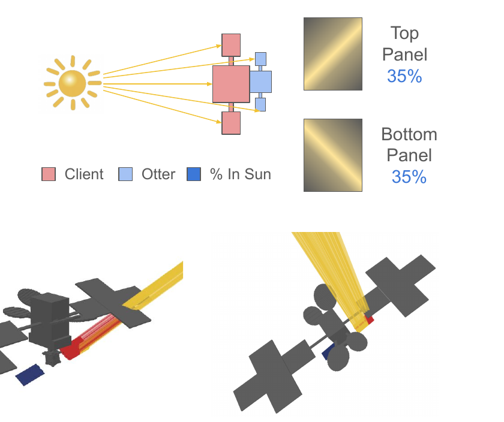
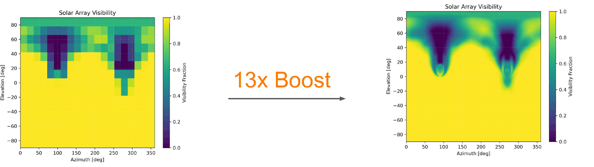
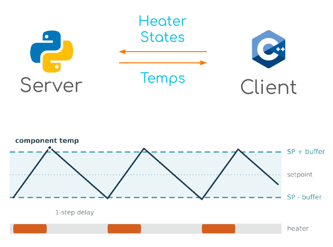
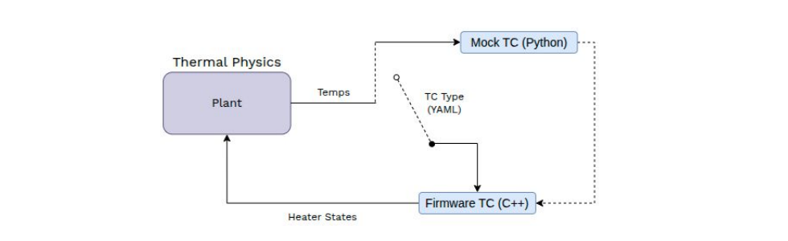

Non-Disclosure Agreement: only non-proprietary aspects of my work at Starfish Space are discussed here.
I spent my 2026 summer as a GNC intern at Starfish Space working on rendezvous and proximity operations for Otter, a servicing vehicle that uses relative navigation to autonomously dock with client spacecraft. My work covered three projects, each integrated into Starfish's Basilisk simulation and CI pipeline: a modular attitude control framework, a solar array shadowing model for power-aware proximity operations, and a SIL C++ thermal controller exercised across nominal and tumbling rendezvous 6-DOF simulations.
Generic Satellite Attitude Control
I designed a generic attitude controller class and a composable PID controller in Python and C++ for Basilisk. The wrapper handles what every control law shares - attitude error, reference rates in the body frame, torque saturation - and the flight software selects its law by name from config. The composable PID assembles that law at construction from lookup tables. Most importantly, the framework I developed supports entirely custom, Lyapunov, and other PID formulations without rebuilding the code, and each variant carries its own unit test. A simple version of the work is included in the demo below.
Supporting Power-aware Trajectory Design
Otter docks with clients significantly larger than itself, so both the client and Otter's own structure throw a moving shadow across the solar arrays. Client geometry is unique to every mission and the docked stack's dynamics change constantly, so a shadowing model that was accurate, cheap, and valid for all orientations was needed to assist with power-aware RPOD.
I built a ray tracing pipeline that resolves self and client shadowing directly from spacecraft geometry, including solar panel rotation. I reduced the dimensionality of the problem by collapsing the three-dimensional Sun vector to two angles and removing the dependence on Sun distance, reducing the problem to a 2-D look-up table of array visibility fraction that the BSK simulation interpolates in microseconds.

Otter Client shadowing results for different orientations.

The same azimuth × elevation visibility table before and after parallelization.
I integrated the model into Basilisk end to end: a custom pyModel that maps Otter's orientation onto the table's two angles and interpolates it, an interface layer wiring config, Python, and the C++ solar panel model together through the messaging system, and plotting support that resolves the resulting shadow factor across anything from a single orbit to a full year.
SIL Thermal Controller
Validating a thermal controller left two options: a mock controller, cheap and broad but blind to what the real firmware actually does, and TVAC, perfectly faithful but real-time and unable to sweep every orbit, attitude, and fault case.
I closed this gap by building a SIL framework connecting Otter's real temperature control firmware to Basilisk's 6-DOF Monte Carlo state propagation. The firmware communicates with the simulation over a lockstep socket interface, and the sim blocks on the client everystep, reproducing the flight-like single-step delay between reading a temperature and heater response.

Socket interface and example temperature response profile.

One plant, two controllers - a simple config switch.
The simulation scales to n components. Also, the mock and firmware controllers hang off the same plant behind a config switch so that they compare on identical dynamics. I validated thermal control capability across nominal and tumbling rendezvous scenarios and added the checks to the CI unit test pipeline.